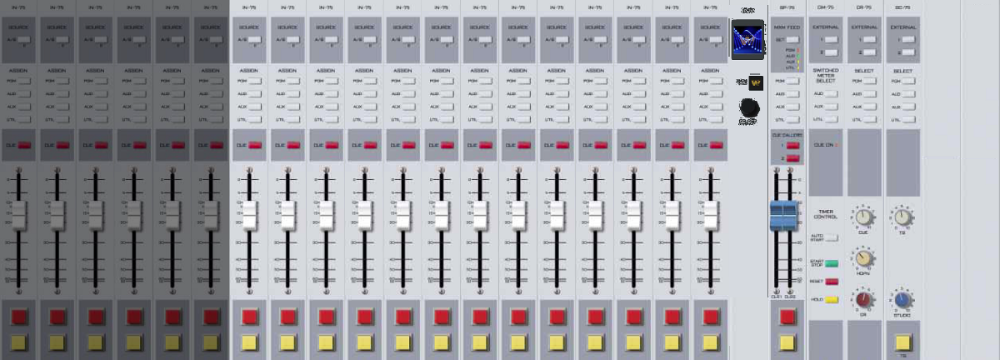
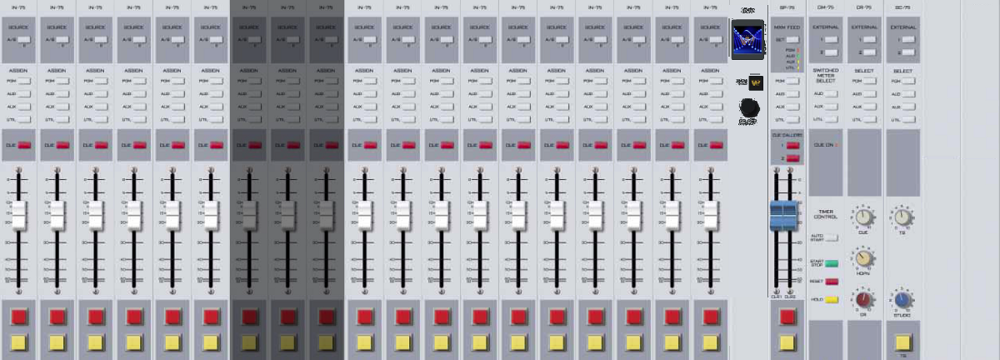
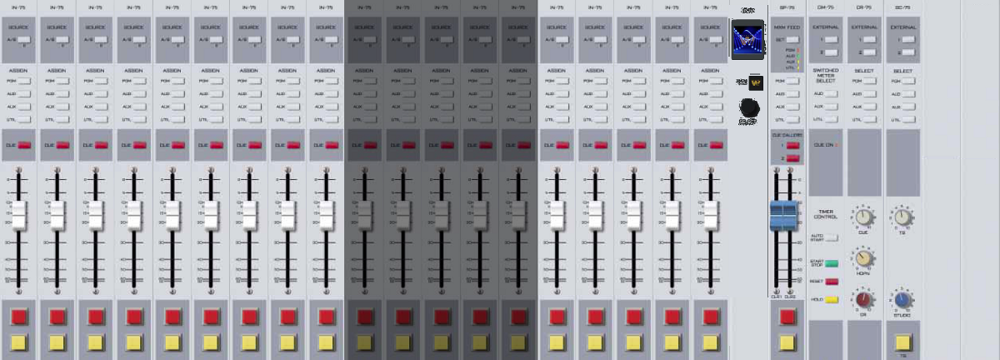
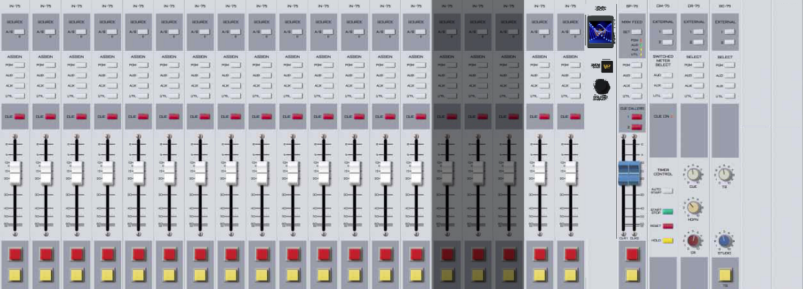
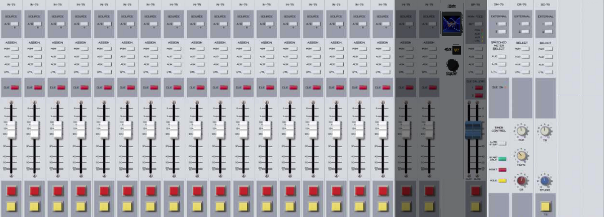
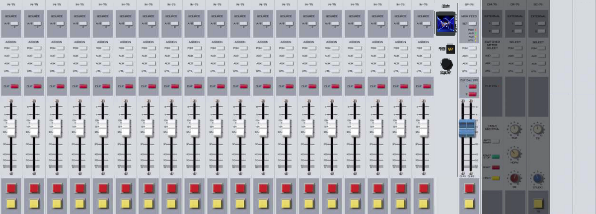

9.B. A Tour of Studio A
9.B.1. Studio A Console Inputs
This section briefly goes through the studio inputs in order from left to right. A graphic before each subsection puts the inputs in context.
Inputs 1-6: Classroom Mics

| Input # | 1 | 2 | 3 | 4 | 5 | 6 |
|---|---|---|---|---|---|---|
A |
Class Mic 1 |
Class Mic 2 |
Class Mic 3 |
Class Mic 4 |
Class Mic 5 |
Class Mic 6 |
B |
Studio B PGM |
Studio C PGM |
Studio D PGM |
Newscenter PGM |
Turntable 1 |
Class Mics 1-6 are the microphones on the public affairs table. 11.C. The Public Affairs Table on Page 117 in Volume II
The inputs from the production studio PGM busses allow each production studio to be easily placed on-air.
Turntable 1 is where a turntable can be connected during special events such as Vinylthon. 10.G. Turntable on Page 94 in Volume II
Inputs 7-9: Control Room Mics

| Input # | 7 | 8 | 9 |
|---|---|---|---|
A |
CR Mic Front |
CR Mic Middle |
CR Mic Rear |
B |
Class Mic 7 |
Class Mic 8 |
CR Mic Front — The microphone next to the console and window.
CR Mic Middle — The microphone on the right side, next to the front, right equipment rack.
CR Mic Rear — An extra microphone jack at the back of the counter-top. 7.B.2. On-Air Microphone on Page 7 of Volume II
Inputs 10-14: Computer Playback

| Input # | 10 | 11 | 12 | 13 | 14 |
|---|---|---|---|---|---|
A |
Rivdell 1 |
Panel 1 |
Preview |
Rivdell 2 |
Panel 2 |
B |
Tone |
Turntable 2 |
Rivdell 1, Panel 1, Preview, Rivdell 2, Panel 2 — See 14. Computer Playback (Automation) — On-Air Operations on Page 3 in Volume III.
Tone — A 1000 Hz tone used for testing and calibration.
Turntable 2 — A second turntable connection. 10.G. Turntable on Page 94 in Volume II
Inputs 15-17: Other Playback

| Input # | 15 | 16 | 17 |
|---|---|---|---|
A |
CD 1 |
CD 2 |
Editor |
B |
CD 1, CD 2 — 10.H. CD Players on Page 98 in Volume II
Editor — The digital editor in Studio A. The use of digital editing software is beyond the scope of this manual. A very brief discussion of editing is included in 18.A.2. Basic Editing on Page 106 in Volume III
Input / Modules 18-21: Remote Sources

Module # |
18 |
19 |
20 |
21 |
A |
A-Aux 1 |
A-Aux 2 |
IP-75 |
SuperPhone |
B |
A-Aux 1, A-Aux 2 — Remote channels that receive audio from the router. 10.A. Digital Router on Page 71 in Volume II
IP-75 — A component of the router. Read the technical details in 12.C. Digital Router — Under the Hood on Page 171 in Volume II.
SuperPhone — Module to easily bring in phone callers. 9.A.9. The SuperPhone Module on Page 55 in Volume II, and 11.F. Introduction to Telephone-Like Interfaces on Page 121 in Volume III.
Modules 22-24: Control Modules

| Module # | 22 | 23 | 24 |
|---|---|---|---|
Output |
Control Room |
Studio |
Output Module — Controls the timer and the switched VU meters. 9.A.3. Switched VU Meters on Page 51 in Volume II
Control Room Module — 9.A.6. Using the Monitor Speakers and Headphones on Page 52 in Volume II
![A graphic showing the layout of Studio A. Clockwise from the doorway: On the counter-top along the left-hand wall is the telecom rack with the Gentner DH22, Comrex Access, and Comrex Opal, then the Webcaster PC, the Audio Over IP 1 PC, and the Rivendell 1 PC. Behind the Rivendell 1 monitor is the Front, Left Rack with the EAS Endec, EAS Receiver, and the Flash Recorder. On the countertop across the front wall is the audio console. On the countertop across the right-hand wall is the Front, Right Rack with the Modulation Monitor, Delay Box, Transmitter Remote Control, and CD Players. After that is the Rivendell 2 PC, and the Audio Editor PC. In a free-standing rack in the rear-right of the room is the router rack with the XY controller and the patch panel. Along the back wall are the CD cabinets.](../_images/common_color/common_license/09-station_operations/studio_a_layout.svg)